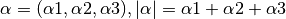
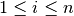
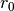

Algorithms¶
Univariate polynomial evaluation¶
- The evaluation of 1-D polynomials uses Horner’s algorithm.
- The evaluation of 1-D Chebyshev and Legendre polynomials uses Clenshaw’s algorithm.
Multivariate polynomial evaluation¶
Multivariate Polynomials are evaluated following the algorithm in [1] . The algorithm uses the following notation:
multiindex is a tuple of non-negative integers for which the length is defined in the following way:

inverse lexical order is the ordering of monomials in such a way that if and only if there exists  such that
 .
.In this ordering and
Multivariate Horner scheme uses d+1 variables
 to
store intermediate results, where d denotes the number of variables.
to
store intermediate results, where d denotes the number of variables.Algorithm:
- Set di to the max number of variables (2 for a 2-D polynomials).
- Set  to
 , where c is a list of
coefficients for each multiindex in inverse lexical order.
, where c is a list of
coefficients for each multiindex in inverse lexical order. - For each monomial, n, in the polynomial:
- determine
- Set
- Set

- return

The evaluation of multivariate Chebyshev and Legendre polynomials uses a variation of the above Horner’s scheme, in which every Legendre or Chebyshev function is considered a separate variable. In this case the length of the
 indices tuple is equal to the number of functions in x plus
the number of functions in y. In addition the Chebyshev and Legendre
functions are cached for efficiency.
indices tuple is equal to the number of functions in x plus
the number of functions in y. In addition the Chebyshev and Legendre
functions are cached for efficiency.
| [1] |
|